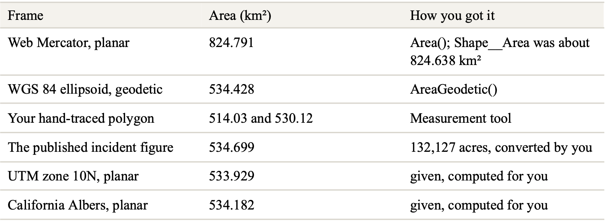
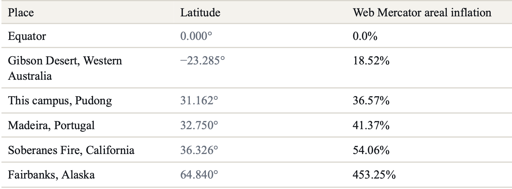
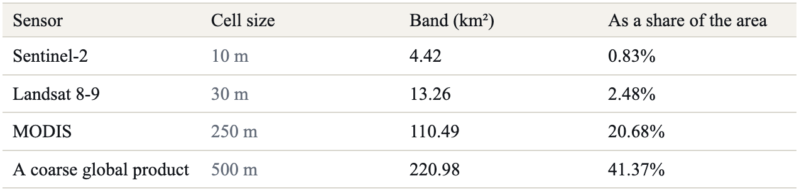

Lab 03 · October 2026
One Perimeter, Three Answers
The question
How much land burned in the 2016 Soberanes Fire in Big Sur, California, and how does the measured area change with projection, raster resolution, and terrain?
The data
I used the Soberanes_Perimeter layer published by Teach_with_GIS in ArcGIS Online. Source layer ↗
For satellite imagery, I used the Landsat 8–9 mission in Esri Landsat Explorer. I compared a pre-fire image from 20 June 2016 with a post-fire image from 26 October 2016.
I also used the ArcGIS elevation surface in Scene Viewer for the terrain and slope analysis.
The perimeter coordinate system was not shown directly in the map interface. I found it only in the service definition as EPSG:3857 — WGS 84 / Pseudo-Mercator (Web Mercator).
The geometry also contains 686 rings smaller than 900 m², which is smaller than one 30 m × 30 m Landsat cell. This shows that some of the boundary detail is finer than the source imagery could actually observe.
The method
I measured the same Soberanes Fire perimeter in several different frames.
In ArcGIS Map Viewer, Area() measured the polygon planarly
in its stored EPSG:3857 Web Mercator frame, while
AreaGeodetic() measured the same polygon geodetically on the
WGS 84 ellipsoid.
I used the following Arcade expression:
var planar = Area($feature, 'square-kilometers');
var globe = AreaGeodetic($feature, 'square-kilometers');
var acres = AreaGeodetic($feature, 'acres');
var rings = Count(Geometry($feature).rings);
return 'planar ' + Round(planar, 3) + ' km2'
+ TextFormatting.NewLine
+ 'geodetic ' + Round(globe, 3) + ' km2'
+ TextFormatting.NewLine
+ 'geodetic ' + Round(acres, 0) + ' acres'
+ TextFormatting.NewLine
+ 'ratio ' + Round(planar / globe, 4)
+ TextFormatting.NewLine
+ 'rings ' + rings;
The main measurement frames I compared were:
- 824.791 km² — planar measurement in EPSG:3857 Web Mercator.
- 534.428 km² — geodetic measurement on the WGS 84 ellipsoid.
- 514.03 km² and 530.12 km² — hand-traced measurements made with the ArcGIS Measurement tool, which measures geodetically.
- 533.929 km² — planar area in UTM Zone 10N.
- 534.182 km² — planar area in California Albers, an equal-area projection.
I also traced the fire perimeter manually to see how much the result changed when the boundary was drawn roughly by hand.


To test raster-resolution sensitivity, I compared the fire boundary with the 30 m Landsat cells. For terrain, I drew two elevation profiles in Scene Viewer and calculated the surface-area factor using 1 / cos(average slope).
For vertical height, I used the EGM2008 geoid model from the GeographicLib geoid calculator. I converted ellipsoidal height to orthometric height using:
H = h − N
The map
The figures below show the Soberanes Fire through satellite imagery, raster resolution, the mapped fire perimeter, and the terrain surface.
Figure 1 · Before and after the fire
I compared Landsat 8–9 Short-wave IR imagery from before and after the Soberanes Fire.


Figure 2 · The Landsat cells
I zoomed into the post-fire imagery until the raster structure became visible. Comparing the image with Terrain turned on and off makes the Landsat cell structure easier to see.


Figure 3 · The mapped fire perimeter
I viewed the Soberanes Fire perimeter in ArcGIS Map Viewer. The perimeter is stored in EPSG:3857 — WGS 84 / Pseudo-Mercator (Web Mercator).
Figure 4 · Terrain and elevation profiles
I used ArcGIS Scene Viewer to examine how the burned area crosses the mountainous terrain. I drew two elevation profiles across different parts of the fire to compare the average slope.


What I found
Areas measured geodetically on the WGS 84 ellipsoid. Source geometry stored in EPSG:3857 (Web Mercator); planar areas in that frame are inflated by sec²(φ) and are reported here only for comparison.
Frames comparison
The same Soberanes Fire perimeter produced different area values depending on the coordinate frame and measurement method.

I would publish the WGS 84 geodetic area of 534.428 km². It avoids the large area distortion produced by Web Mercator and is very close to the published incident figure of 534.699 km², the UTM Zone 10N result of 533.929 km², and the California Albers result of 534.182 km².
Sensitivity to latitude
Web Mercator area distortion becomes larger as latitude increases.

For Soberanes, the predicted Web Mercator area factor was 1.5406, while the measured planar-to-geodetic ratio was 1.5433. The close agreement shows that the large difference between the two area measurements is mainly caused by the projection.
Sensitivity to raster resolution
I also tested how the uncertainty around the fire boundary changes with raster cell size.

For the Soberanes Fire, the Web Mercator projection effect (about 54%) was much larger than the uncertainty associated with the 30 m Landsat grid (about 2.5%). With coarser imagery, however, raster resolution becomes much more important.
What this does not show
The fire perimeter is limited by the 30 m resolution of the Landsat imagery. Features close to or smaller than one cell may disappear, occupy an entire cell, or appear more precise in the vector boundary than the satellite could actually observe.
The terrain calculation is only a lower bound. Using one average slope cannot represent every steep and gentle section of the landscape, so the real burned surface area may be larger than 574.3–576.3 km².
The vertical-height conversion also depends on the geoid model. The three models differed by 1.7803 m at Soberanes, 0.7051 m at the campus, and 1.9648 m at Everest. This means the geoid model used for a height conversion should be stated.
The three sources of disagreement do not always have the same ranking. At a lower latitude, projection distortion would become smaller. With a coarser sensor or a smaller feature, grid uncertainty could become larger. On steeper terrain, terrain correction could become more important.
AI use
I used ChatGPT to help clarify the lab instructions, check my calculations, and check my Arcade and HTML code. I verified the results using ArcGIS outputs, Landsat Explorer, the geoid calculator, and the lab instructions. The measurements, screenshots, and interpretation are my own.
← Back to all labs